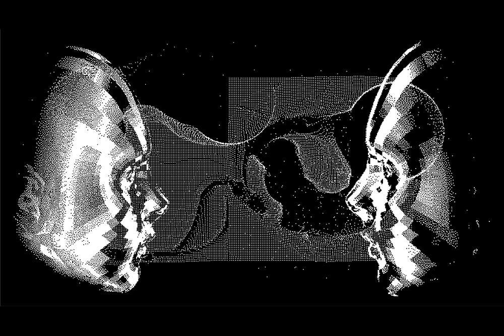

Help us explore how people hide their true thoughts, feelings, or behaviors
— The collection will start at MAY 2025

Thank you for visiting our research website. This platform is part of an independent psychology project focused on understanding camouflaging behavior—the ways in which individuals consciously or unconsciously mask, hide, or adapt their true feelings, thoughts, or behaviors in social settings. Camouflaging can be driven by a desire to fit in, avoid judgment, or navigate social norms, and it plays a significant role in how people experience and manage social interactions.
The aim of this study is to explore the psychological patterns, motivations, and impacts of camouflaging across different populations. By collecting anonymous responses through our questionnaire, we hope to contribute valuable insights to the field of behavioral and social psychology. Your participation will help deepen our understanding of this complex and often overlooked aspect of human behavior.
All data collected is confidential and used solely for academic research purposes. Participation is voluntary and greatly appreciated.
Your privacy and trust are extremely important to us. Please take a moment to review our questionnaire policy before participating:
Voluntary Participation: Taking part in this questionnaire is completely voluntary. You may choose to stop or withdraw at any time without any consequences.
Anonymity and Confidentiality: All responses are collected anonymously. No personal identifying information (such as your name, email, or contact details) will be asked or stored. Your answers will remain confidential and will be used solely for the purposes of this academic research project.
Use of Data: The data collected will be analyzed only in the context of this psychology research project. Findings may be shared in reports, academic presentations, or publications, but individual responses will never be disclosed.
Data Storage and Security: All data will be securely stored in password-protected files and accessible only to the researcher(s) involved in the project.
Age Requirement: Participants must be [insert minimum age, e.g., 18 years or older] to take part in this study.
Ethical Approval: This research has been reviewed and approved in accordance with [your school/university]'s ethical guidelines for independent psychological research.
By proceeding with the questionnaire, you acknowledge that you have read and understood this policy.